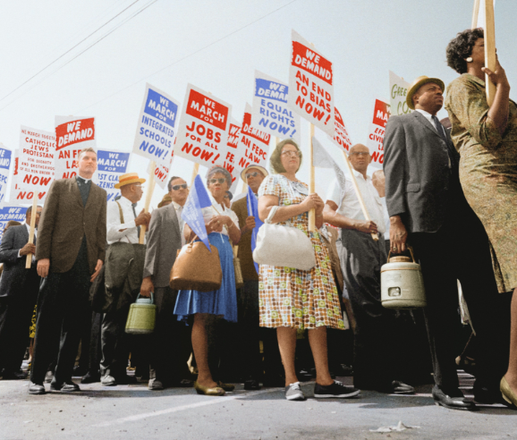
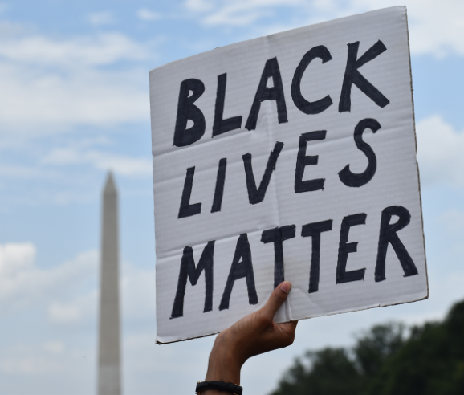

The civil rights movement was a struggle for social justice that took place mainly during the 1950s and 1960s for Black Americans to gain equal rights under the law in the United States.
Social events that had impacted the USA

Civil Rights
Gay Marriage
Obama Election

Black Lives Matter
Continue